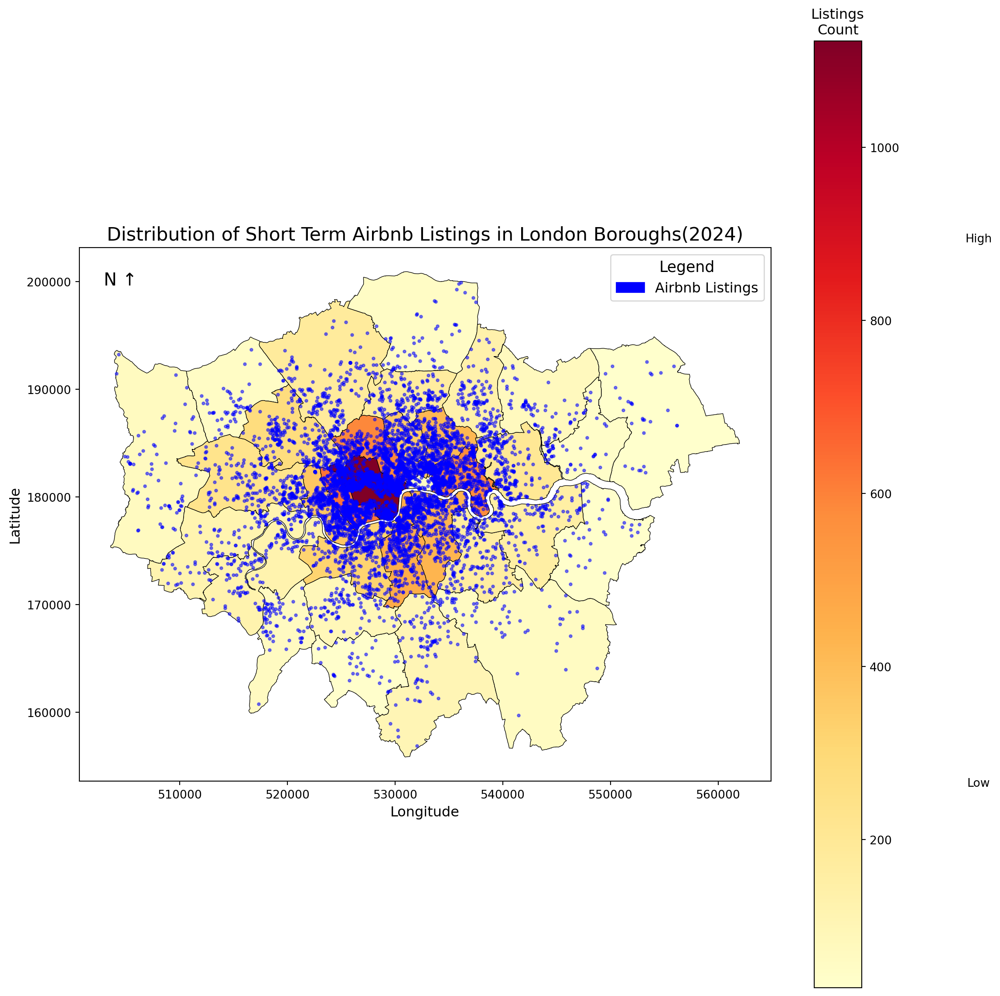
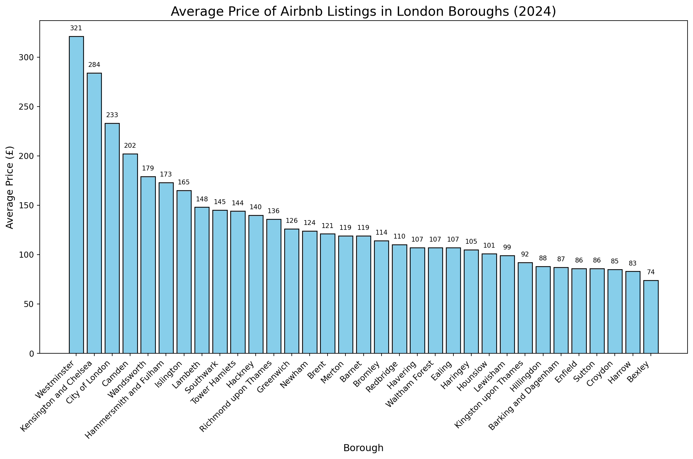
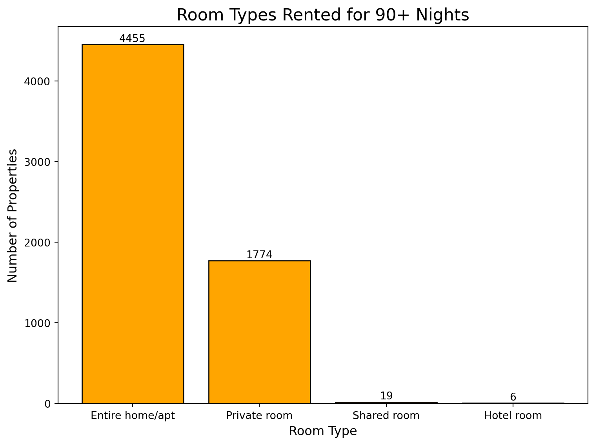
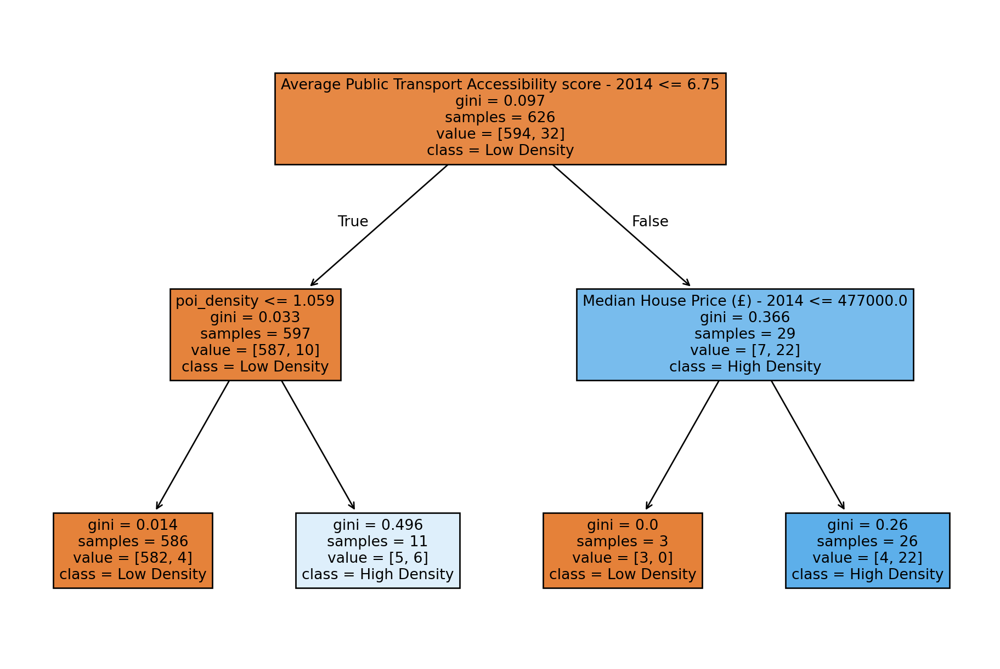
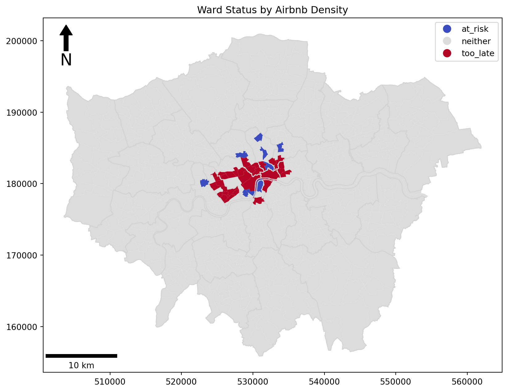
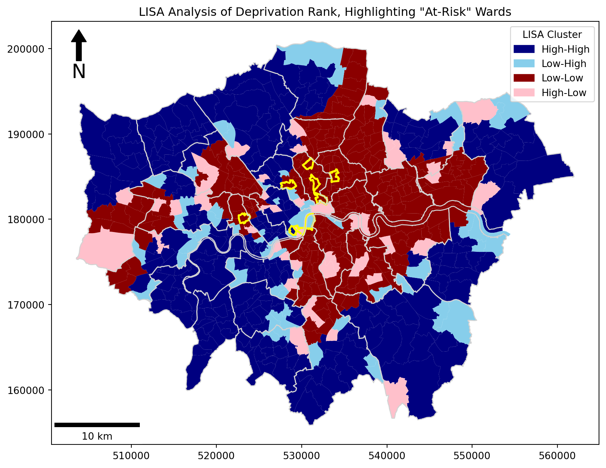

CHASE’s Group Project
1. Who collected the InsideAirbnb data?
The InsideAirbnb was collected by Murray Cox, Tom Slee, and a team of collaborators working to empower communities through data. Murray Cox is an Australian community artist, activist and photo- journalist who “uses data, media, and technology for social change” (“About” (no date)). (40)
2. Why did they collect the InsideAirbnb data?
Murray Cox and Tom Slee collected the InsideAirbnb data to critically assess the impact of Airbnb on housing markets, to provide unbiased independent publicly available data, and to facilitate the improved understanding of city authorities and regulatory bodies. Motivated by an observation of increasing entire-home listings and “multi-lister” hosts, Cox and Slee aimed to challenge Airbnb’s portrayal as a platform for casual home sharing, revealing that much of its revenue comes from commercial operators who are pushing out local residents by raising house prices (Carville (2019)). (84)
3. How did they collect it?
Inside Airbnb’s data is collected through web-scraping, using public information from Airbnb’s website. There were two main stages of data collection: Identify listings for chosen set of coordinates. Collect the following information for each listing: listing type, approximate address, number of reviews and average review score, capacity, numbers of bedrooms and bathrooms, price, and coordinates. Data is periodically scraped for each location from the Airbnb website adamiak_airbnb_2019, (“Home” (no date)). ()
4. How does the method of collection (Q3) impact the completeness and/or accuracy of the InsideAirbnb data? How well does it represent the process it seeks to study, and what wider issues does this raise?
Inside Airbnb (IA) data is limited as scraping can only take place using publicly available data; that which is allowed in Airbnb’s robots.txt file. Datasets are therefore only an approximation of the Airbnb market and might not be suitable for use by those requiring more detailed understanding of Airbnb’s effect on housing markets eg. policymakers.
Using IA’s data relies solely on the data of Airbnb which only provides an estimation of the short term rental market. Some listings may be booked directly with hosts to avoid Airbnb’s additional charges, and therefore might appear unavailable on Airbnb, but are actually booked; distorting the true effect of Airbnb on the housing market (Prentice and Pawlicz (2023)).
As acknowledged by IA, listings’ geographic locations are not available, meaning that analysis must be aggregated to a higher level. This limits the ability to conduct detailed analysis of Airbnb’s effect on the housing market, as would be the case when conducting price analysis using distance to points of interest as explanatory variables (Todd, Musah and Cheshire (2022)).
IA programmer, Slee, T. (n.d.), states that ‘no guarantees are made about the quality of data obtained using this script, statistically or about an individual page,’ encouraging researchers to check validity on their own. Furthermore, the script was last updated in 2019 (Slee (2024)), potentially resulting in inaccurate listing counts following changes to Airbnb’s data structure, reducing the useability of the data to assess housing market impacts.
The IA data is therefore not ‘raw’, it is “verified, cleansed, analyzed and aggregated” “Home” (no date), meaning the data is biased. Cleaning and aggregation removes detail and certain perspectives from the data. This erasure is especially significant when those working, processing and analysing the data are not aware of the context in which it was created (D’Ignazio and Klein (2020)).
Completeness and accuracy challenges raise the question of whether researchers should rely solely on data collected by one organisation, from one website, to analyse the impact of an industry. By focusing solely on the data provided by IA researchers will come to biased and partial conclusions that are influenced by the views of IA’s creators. (345)
5. What ethical considerations does the use of the InsideAirbnb data raise?
Terms of Service outline the contract through which users and Airbnb interact, specifying users must not scrape or use scrapers or crawlers to access or collect data (“Terms of Service - Airbnb Help Centre” (no date)).
From the perspective of an Airbnb user, having agreed to the Terms of Service, they expect that their data is protected. However, as InsideAirbnb demonstrates, these agreements do not guarantee that data will not be collected. Instead, Airbnb are relying on the conscience of the programmers to adhere to the Terms of Service and robot.txt files to guarantee privacy to their users.
The Terms of Service is contradictory to the robot.txt file- the former specifies not scraping data at all, the latter could be considered as permission to scrape certain data by explicitly prohibiting access to other data.
The robot.txt file is however non-binding, so relies on the programmer’s adherence, which could cause harm to Airbnb’s users and customers if not followed.
InsideAirbnb data is collected through web scraping, in contradiction to the Terms of Service, so despite the efforts taken by IA to anonymise the data, Airbnb users have not given their informed consent for any data to be collected in this way, nor have they consented to their data being used by third parties in this manner, raising ethical considerations over the use of data provided by Krotov, Johnson and Silva (2020).
Another ethical issue is the accuracy of the data being provided. InsideAirbnb state that accuracy of the information compiled from the Airbnb site is not the responsibility of Inside Airbnb. Due care has been taken with any processing and analysis. - (“Home” (no date)).
As Mason (1986) explains, depending on how it is used, the data’s accuracy can raise ethical concerns. InsideAirbnb’s data is “used regularly over the last year by city analysts, journalists, academics and hospitality analysts” Cox and Slee (no date). The use of such data by city analysts will impact the lives of those that fall under the jurisdiction of the city authority, raising the ethical consideration of the data’s accuracy due to the harm that may be caused from the use of Inside Airbnb’s potentially misrepresentative data. This is of further concern when those analysing the data do not fully understand the process through which it has been collected and the limits this brings, causing potentially significant economic and societal impacts if InsideAirbnb’s data is not used mindfully.
Mason (1986) argues that accessibility is also an ethical concern when it comes to using data. Not everyone has the technologies required to access the data, and even fewer have the intellectual skills to interpret and process the InsideAirbnb data. D’Ignazio and Klein (2020) explain that differential power has a silencing effect and that quantitative data can leave people out. Whilst InsideAirbnb’s mission is to “work towards a vision where communities are empowered with data and information” (“Home” (no date)), its capability to do so is limited if the communities it seeks to empower lack the means to make use of the available data. The lack in transfer of data science skills and knowledge to the communities that InsideAirbnb seek to represent, and subsequent reliance on external researchers, mean that the imbalances in education and power will not be sufficiently addressed since the communities’ reality will only ever be told through the partial perspective of said researchers. (540)
6. With reference to the InsideAirbnb data (i.e. using numbers, figures, maps, and descriptive statistics), what does an analysis of Hosts and the types of properties that they list suggest about the nature of Airbnb lettings in London? - Total 698
There is a possibility of making the base map of the airbnb density the price so that we save 150 words. So there wont be a bar graph of average price.
Calculating Percent of Short-Term Listings per Borough
Airbnb’s short-term listings are clustered in boroughs surrounding the City of London. 14.4% of listings occur in Westminster, followed by 8.1% in Kensington and Chelsea, then 7.5% in Camden.
Boroughs with Airbnb Percentages:
NAME Airbnb_Counts Percentage
32 Westminster 1123 14.408519
19 Kensington and Chelsea 629 8.070310
5 Camden 586 7.518604
29 Tower Hamlets 578 7.415961
21 Lambeth 463 5.940467
27 Southwark 429 5.504234
11 Hackney 419 5.375930
12 Hammersmith and Fulham 367 4.708750
18 Islington 350 4.490634
31 Wandsworth 320 4.105722
3 Brent 279 3.579677
8 Ealing 233 2.989479
24 Newham 200 2.566076
1 Barnet 182 2.335130
13 Haringey 171 2.193995
22 Lewisham 163 2.091352
10 Greenwich 155 1.988709
30 Waltham Forest 135 1.732102
26 Richmond upon Thames 125 1.603798
17 Hounslow 118 1.513985
7 Croydon 104 1.334360
23 Merton 91 1.167565
25 Redbridge 72 0.923788
16 Hillingdon 70 0.898127
20 Kingston upon Thames 65 0.833975
4 Bromley 63 0.808314
6 City of London 56 0.718501
9 Enfield 54 0.692841
14 Harrow 52 0.667180
0 Barking and Dagenham 42 0.538876
2 Bexley 37 0.474724
28 Sutton 34 0.436233
15 Havering 29 0.372081Calculating the Average Price of Airbnb Listings in London Boroughs
Average Price of Airbnb Listings per Borough:
NAME Average_Price
32 Westminster 321.0
19 Kensington and Chelsea 284.0
6 City of London 233.0
5 Camden 202.0
31 Wandsworth 179.0
Westminster, Kensington and Chelsea, and the City of London exhibit the highest average prices, while Bexley and Harrow have the lowest, reflecting significant variation in short-term rental costs across the city.
Properties Available for over 90+ Nights
A concern that Airbnb imposes in London is ‘commercialisation’. The Greater London Authority (GLA) states that “it creates a risk of residential properties being used as letting businesses without the required planning permission and protections for neighbours” (Balogun et al. (2024), p.26). To avoid this issue, homeowners are required to obtain planning permission if they intend to use residential properties for short-term accommodation exceeding 90 nights. In the current 2024 analysis, we found that there is a total of 6254 listings available for over 90+ nights. Westminster has 15.7% of those listings, Kensington and Chelsea at 9%, and Tower Hamlets at 7.5%.
Airbnb Listings Available for 90+ nights by Borough (With Percentage):
NAME Airbnb_Counts Percentage
0 Barking and Dagenham 31 0.495683
1 Barnet 153 2.446434
2 Bexley 26 0.415734
3 Brent 205 3.277902
4 Bromley 47 0.751519
5 Camden 465 7.435241
6 City of London 53 0.847458
7 Croydon 84 1.343140
8 Ealing 184 2.942117
9 Enfield 38 0.607611
10 Greenwich 131 2.094659
11 Hackney 325 5.196674
12 Hammersmith and Fulham 303 4.844899
13 Haringey 137 2.190598
14 Harrow 42 0.671570
15 Havering 26 0.415734
16 Hillingdon 61 0.975376
17 Hounslow 87 1.391110
18 Islington 280 4.477135
19 Kensington and Chelsea 562 8.986249
20 Kingston upon Thames 47 0.751519
21 Lambeth 359 5.740326
22 Lewisham 110 1.758874
23 Merton 66 1.055325
24 Newham 157 2.510393
25 Redbridge 64 1.023345
26 Richmond upon Thames 77 1.231212
27 Southwark 329 5.260633
28 Sutton 28 0.447713
29 Tower Hamlets 469 7.499201
30 Waltham Forest 91 1.455069
31 Wandsworth 235 3.757595
32 Westminster 982 15.701951
Total Airbnb Listings Available for 90+ nights: 6254Total Airbnb Listings Available for 90+ Nights: 6254
Room Types Available for 90+ Nights:
Room Type Count
0 Entire home/apt 4455
1 Private room 1774
2 Shared room 19
3 Hotel room 6
The most common ‘room types’ available for over 90+ nights are entire homes and apartments.
Hosts with Multiple Listings
GLA have discovered that hosts with multiple listings on Airbnb are more likely to be using the platform for commercial purposes (Balogun et al. (2024), 2024, p.25). The total number of hosts with two or more listings is 6253 with the average number of listings per host being 7.06. The maximum number of listings is 1253 that belong to Sykes Holiday Cottages. This shows that the Airbnb market in London is commercialised and does not adhere to the GLA 90-night policy limit.
Total number of hosts with more than 2 listings: 6253
Average number of listings per host: 7.06
Maximum number of listings: 1253
Minimum number of listings (2 or more): 2
Host(s) with the most listings:
host_name total_listings
5518 Sykes Holiday Cottages 12537. Drawing on your previous answers, and supporting your response with evidence (e.g. figures, maps, EDA/ESDA, and simple statistical analysis/models drawing on experience from, e.g., CASA0007), how could the InsideAirbnb data set be used to inform the regulation of Short-Term Lets (STL) in London?
Insights from the previous section highlight the commercialized reality of Airbnb in London despite official regulations. Failure to limit Airbnb has the potential to exacerbate the affordable housing crisis in London by reducing the availability of long-term rentals. The impact of Airbnb is of particular concern with regard to deprived households, whereby increased housing costs can contribute to displacement, making it more difficult for these residents to remain in their communities.
Our analysis aims to answer the following questions: What wards are “at risk” of becoming an Airbnb hotspot? Of these wards, which are also the most vulnerable to the negative social impacts of Airbnb?
We filtered the Airbnb dataset to focus on listings most relevant to neighbourhood impacts:
Minimum Nights: Excluded stays over 30 nights to target short-term rentals.
Recently Active: Included listings with reviews in the past six months for current relevance.
Availability: Kept listings available at least 90 days annually to capture impactful activity.
Room Type: Focused on “Entire home/apt” listings due to their greater effect on housing and neighbourhood dynamics.
Data Reading and Wrangling
gdown is already installed. Skipping installation.
File already exists: London_Points_Of_Interest.gpkg. Skipping download.
File size: 129515520 bytesAnalysis
Decision Tree Model
We chose a decision tree methodology for this analysis due to its high interpretability, making it easy for policymakers to understand how each ward was classified as “at-risk” or “too late”. Each classification decision the model makes can be easily traced in a simple, visual format.
The decision tree predicts whether a ward is likely to have high Airbnb density using ward-level characteristics of public transport accessibility, house prices, and point of interest density, which we then use to categorise each London ward into one of three groups:
Too Late: Wards already heavily impacted by Airbnb, that are in the top 5% of airbnb’s per 1000 households.
At Risk: Wards predicted to have high Airbnb density but do not meet the threshold.
Neither: Wards that don’t fall into either category.
We selected these variables as research has shown that higher-income neighborhoods, better transit access, and proximity to attractions significantly influence Airbnb activity Jiao and Bai (2020).
AirBnb Density 'Too-Late' Threshold: 5.63 per 1000 households
Average Ward AirBnb Density: 1.43 per 1000 households
Average Ward House Price: £434,979
Average Ward Point of Interest Density: 0.27
Average Ward Public Transport Accessibility Score: 3.78
Interpreting the Decision Tree
The decision tree model identifies two scenarios where a ward is predicted to have a high Airbnb density:
- Transport Accessibility score of more than 6.75 and a Median House Price of more than £477,000
or
- Transport Accessibility score of less than or equal to 6.75 and a point of interest density of more than 1.059 per hectare.
The results suggest that high Airbnb density is linked to well-connected areas with above-average housing prices, though less connected areas can also attract Airbnb activity if they offer a high concentration of attractions and amenities.
There are 9 wards that meet either of these conditions but do not exceed the ‘too late’ Airbnb density threshold, so we have categorised them as ‘at-risk’.
These at-risk wards are: Lambeth - Bishop's, Hammersmith and Fulham - Shepherd's Bush Green, Westminster - Vincent Square, Westminster - Warwick, Camden - Camden Town with Primrose Hill, Islington - St. Mary's, Islington - Bunhill, Islington - Finsbury Park, Hackney - Dalston
“At-Risk” Wards and Deprivation
To assess potential social impact of Airbnb in London, we analyzed the relationship between our Airbnb decision tree classifications and deprivation rank in wards. Deprivation rank is a relative measure comparing the level of deprivation across London wards. The lower the deprivation rank, the greater the deprivation score in the ward.
EDA
Mean Deprivation Rank for 'at-risk' wards: 200
Mean Deprivation Rank for 'too-late' wards: 319
Mean Deprivation Rank for 'neither' wards: 315We begin with an exploratory data analysis of deprivation and ward classifications. The results shows the average deprivation rank between classification types. We see that the mean deprivation of “at-risk” wards is lower than “too-late” wards. This suggests that “at-risk” wards are not only desirable to Airbnb letters based on our classification, but are also particularly vulnerable to the negative impacts of Airbnb due to these areas being more deprived on average.
Spatial Autocorrelation Analysis
The question of remains where overlaps between “at-risk” wards and high deprivation occur. Spatial autocorrelation analysis of deprivation in London wards was employed to assess the spatial distribution of deprived wards and examine which “at-risk” wards lie within high deprivation clusters. Cluster analysis improves the generalizability of the study by identifying patterns of deprivation beyond individual wards with arbitrary boundaries.
Moran’s I:
Global Moran's I: 0.6888600665914413
p-value: 0.001A Moran’s I test is conducted to establish that deprivation is not randomly distributed across wards in London. A Global Moran’s I statistic of 0.689 with a p-value less than 0.05 indicates there is statistically significant clustering of deprivation in London wards.
LISA:

Local indicators of spatial autocorrelation (LISA) statistics allow us to visualize the clustering of deprivation in London. Outlining “at-risk” wards in yellow, we see an overlap of deprivation clustering and “at-risk” classification for three wards in Islington, one in Hackney, one in Camden, and one in Hammersmith and Fulham.
Conclusion
The study concludes there are 9 wards “at-risk” of becoming heavily saturated by Airbnb. Furthermore, six of these wards are located within clusters of high deprivation. City policy should focus on better regulating and limiting Airbnbs in the the boroughs of Islington, Hackney, and Hammersmith and Fulham to mitigate the negative impacts of Airbnb on vulnerable populations.
Limitations
- old data
- predictive power of decision tree? unclear, need other tests/studies
- deprivation broad measure, need better understanding which forms of deprivation most prevalent in chosen wards, for better context-specific policy
- qualitative research/local knowledge to inform of local experience w/ airbnb
References
“About” (no date). Available at: https://insideairbnb.com/about/ (Accessed: December 15, 2024).
Balogun, B. et al. (2024) “The growth in short-term lettings in England.” Available at: https://commonslibrary.parliament.uk/research-briefings/cbp-8395/ (Accessed: December 16, 2024).
Carville, O. (2019) “Meet Murray Cox, The Man Trying to Take Down Airbnb,” Bloomberg.com. Available at: https://www.bloomberg.com/news/articles/2019-05-23/meet-murray-cox-airbnb-s-public-enemy-no-1-in-new-york (Accessed: December 15, 2024).
Cox, M. and Slee, T. (no date) “How Airbnb’s data hid the facts in New York City.”
D’Ignazio, C. and Klein, L. (2020) “5. Unicorns, Janitors, Ninjas, Wizards, and Rock Stars,” Data Feminism. Available at: https://data-feminism.mitpress.mit.edu/pub/2wu7aft8/release/3 (Accessed: December 15, 2024).
“Home” (no date). Available at: https://insideairbnb.com/ (Accessed: December 15, 2024).
Jiao, J. and Bai, S. (2020) “An empirical analysis of Airbnb listings in forty American cities,” Cities, 99, p. 102618. doi: 10.1016/j.cities.2020.102618.
Krotov, V., Johnson, L. and Silva, L. (2020) “Tutorial: Legality and Ethics of Web Scraping,” Communications of the Association for Information Systems, 47(1). doi: 10.17705/1CAIS.04724.
Mason, R. O. (1986) “Four Ethical Issues of the Information Age,” MIS Quarterly, 10(1), pp. 5–12. doi: 10.2307/248873.
Prentice, C. and Pawlicz, A. (2023) “Addressing data quality in Airbnb research,” International Journal of Contemporary Hospitality Management, 36(3), pp. 812–832. doi: 10.1108/IJCHM-10-2022-1207.
Slee, T. (2024) “Tomslee/airbnb-data-collection.” Available at: https://github.com/tomslee/airbnb-data-collection (Accessed: December 15, 2024).
“Terms of Service - Airbnb Help Centre” (no date). Available at: https://www.airbnb.co.uk/help/article/2908 (Accessed: December 15, 2024).
Todd, J., Musah, A. and Cheshire, J. (2022) “Assessing the impacts of Airbnb listings on London house prices,” Environment and Planning B: Urban Analytics and City Science, 49(1), pp. 206–222. doi: 10.1177/23998083211001836.